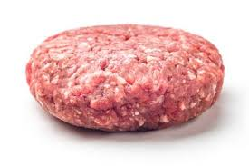

Homemade Burger

Ingredients
- 1 lb Ground Beef
- Burger Buns
- Butter
- Lettuce
- Cheese
- Tomato
- Pepper
-
Step 1:
Shape the ground beef into patties.
 -
Step 2:
Season both sides of burger patties with pepper.
-
Step 3:
Heat oil on medium-high. Gently place patties on the pan, 3 minutes each side.

-
Step 4:
Butter each side of bun, toast on the pan.
-
Step 5:
Assemble burger with cheese, lettuce, patty, buns, tomato.